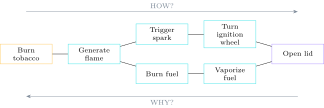

Definition
(UNI EN 12973:2003). The symbol means a symbolic ratio aiming at the most favourable balance, not an exact division. Value analysis (EN 1325-1): an organized and creative approach using a functional and economic procedure to increase the value of a "VA object" — an existing product or one under development — carried out by a VA team following a VA job plan.
Model
Job plan
| Phase | Key questions |
|---|---|
| Information | What is the problem? Which data are available? |
| Functional | What are the functions? How are they linked? |
| Creative | Which alternative ideas/solutions exist? |
| Analytic-selective | Which alternatives raise value most? Which can be |
| implemented? | |
| Presentation | Costs and benefits? Which actions, by whom? |
Functions and the FAST diagram
Describe functions with verb + noun. Lighter example (input: open lid; output: burn tobacco):
| Function | Role |
|---|---|
| Burn tobacco | primary function (output) |
| Generate flame | secondary (how the primary is met) |
| Trigger spark | how flame is generated |
| Turn ignition wheel | how spark is triggered |
| Burn fuel | how flame is generated |
| Vaporize fuel | how fuel burns |
| Ensure flame | supporting |
| Ensure robustness | supporting |
| Open lid | input |
FAST (Function Analysis System Technique): read left → right asking How?, right → left asking Why?. Each function's cost can then be compared with its importance to locate low-value functions.
Worked example
Results reported: Toyota Corolla engine VE project (problems: rising material costs, production time) → engine 10% lighter, 25% fewer parts, faster assembly, lower consumption and emissions, 15% more power, production cost USD 1,000 lower than 1997. Fiat Research Centre: cost reductions of 22% and 12% on two car models. Numerical: a function costs EUR 8 and customers rate its importance at 5% of a EUR 100 product; another costs EUR 2 at 20%. Value index (importance share / cost share): vs — redesign the first.
Pitfall
Value analysis is not cost cutting: removing a function customers need lowers value. Primary function = why the product exists; supporting functions do not directly serve it.
Recall
Write the value ratio; list the five job-plan phases with one question each; build the lighter FAST with How/Why.
Picture

Left to right answers "how?", right to left answers "why?".